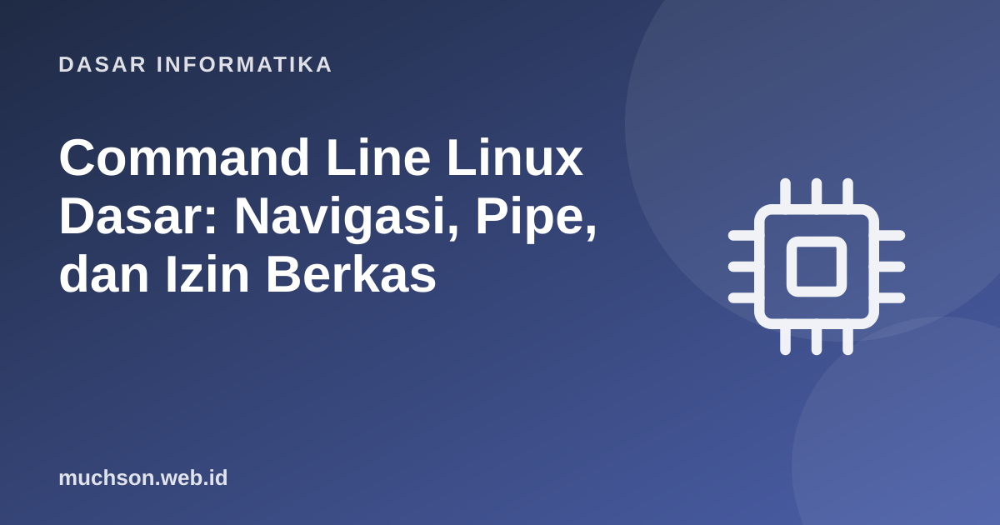

Beranda › Artikel › Dasar Informatika
Dasar InformatikaCommand Line Linux Dasar: Navigasi, Pipe, dan Izin Berkas
Antarmuka grafis nyaman untuk hal yang sering dilakukan, tetapi baris perintah unggul untuk otomasi, pekerjaan berulang, dan mengelola server yang tidak memiliki layar. Hampir semua server, kontainer, dan sistem cloud dijalankan dengan Linux, sehingga kemampuan dasar baris perintah adalah keterampilan yang akan terus terpakai.
Sebaiknya sudah paham: konsep berkas dan folder

Setelah membaca dan mencoba materi ini, Anda mampu:
- bernavigasi dan mengelola berkas dengan pwd, ls, cd, mkdir, cp, mv, rm
- melihat dan mencari isi: cat, less, head, tail, grep, find
- menggabungkan perintah dengan pipe dan redirect
- membaca dan mengubah izin berkas (chmod)
- bekerja dengan proses dan variabel lingkungan serta kebiasaan aman
Cara membaca contoh
Tanda $ menandakan prompt (jangan diketik). Baris tanpa $ adalah keluaran. Contoh dijalankan pada shell bash di Linux, macOS, atau WSL pada Windows; perintah dasarnya sama.
Navigasi dan struktur direktori
$ pwd # di mana saya sekarang?
/home/ani
$ ls # isi direktori
Dokumen Unduhan proyek
$ ls -la # semua (termasuk tersembunyi), format panjang
$ cd proyek # masuk ke direktori
$ cd .. # naik satu tingkat
$ cd ~ # ke direktori home
$ cd - # kembali ke direktori sebelumnya| Simbol | Arti |
|---|---|
| / | Akar sistem berkas (path absolut dimulai dari sini) |
| ~ | Direktori home pengguna (/home/ani) |
| . | Direktori saat ini |
| .. | Direktori induk |
| * | Pengganti nol atau lebih karakter (globbing), misalnya *.txt |
Mengelola berkas
$ mkdir -p laporan/2026 # buat folder (dan induk bila perlu)
$ touch catatan.txt # buat berkas kosong
$ cp catatan.txt cadangan.txt # salin
$ mv cadangan.txt laporan/ # pindah (juga untuk mengganti nama)
$ rm cadangan.txt # hapus (TIDAK ada tempat sampah!)
$ rm -r laporan # hapus folder beserta isinya
$ cat catatan.txt # tampilkan isi
$ less log.txt # lihat halaman demi halaman (q untuk keluar)
$ head -n 5 log.txt # 5 baris pertama
$ tail -n 5 log.txt # 5 baris terakhir
$ tail -f log.txt # ikuti penambahan baris secara langsungrm tidak memiliki tempat sampah. Perintah seperti rm -rf / atau salah ketik pada rm -rf * dapat menghapus semuanya tanpa konfirmasi. Biasakan memeriksa dengan ls memakai pola yang sama sebelum menghapus, dan jangan pernah menjalankan perintah sudo rm dari sumber yang tidak dipercaya.
Pipe dan redirect: kekuatan sebenarnya
Filosofi Unix: program kecil yang melakukan satu hal dengan baik, dihubungkan satu sama lain. | (pipe) mengalirkan keluaran satu perintah menjadi masukan perintah berikutnya; > menulis ke berkas, >> menambahkan, < membaca dari berkas.
akses.log (contoh isi):
10.0.0.5 GET /beranda 200
10.0.0.7 GET /produk 404
10.0.0.5 GET /produk 404
10.0.0.9 GET /beranda 200
10.0.0.7 GET /produk 404
$ grep " 404" akses.log # baris yang mengandung 404
$ grep -c " 404" akses.log # hitung saja
3
$ grep " 404" akses.log | cut -d" " -f1 | sort | uniq -c | sort -rn
2 10.0.0.7
1 10.0.0.5
$ grep " 404" akses.log > galat.txt # simpan hasil ke berkas
$ echo "selesai" >> galat.txt # tambahkan di akhirMencari: grep dan find
$ grep -r "TODO" src/ # cari teks di semua berkas dalam src
$ grep -rn --include="*.js" "fetch(" . # dengan nomor baris, hanya berkas .js
$ grep -i "error" log.txt # abaikan huruf besar-kecil
$ find . -name "*.log" # cari berkas menurut nama
$ find . -type f -size +10M # berkas lebih dari 10 MB
$ find . -mtime -1 # diubah dalam 1 hari terakhirIzin berkas
Setiap berkas memiliki izin untuk tiga pihak: pemilik (u), grup (g), dan lainnya (o), masing-masing r (baca), w (tulis), x (eksekusi).
$ ls -l
-rwxr-xr-- 1 ani staf 1204 Okt 23 skrip.sh
drwxr-xr-x 2 ani staf 4096 Okt 23 proyek
rwx r-x r-- = pemilik: baca+tulis+jalankan; grup: baca+jalankan; lainnya: baca
7 5 4 = nilai oktal (r=4, w=2, x=1)
$ chmod +x skrip.sh # tambah izin eksekusi
$ chmod 644 catatan.txt # rw-r--r--
$ chmod 600 kunci.pem # hanya pemilik (wajib untuk kunci privat SSH)
$ ./skrip.sh # menjalankan skrip di direktori saat iniProses dan lingkungan
$ ps aux | grep node # lihat proses yang berjalan
$ top # pemantau interaktif (q untuk keluar)
$ kill 4321 # minta proses 4321 berhenti baik-baik
$ kill -9 4321 # paksa berhenti (pilihan terakhir)
$ perintah & # jalankan di latar belakang
$ echo $PATH # variabel lingkungan: tempat shell mencari program
$ export API_URL=https://contoh.id # set variabel untuk proses turunan
$ history | tail # perintah terakhir
$ man grep # manual; tekan q untuk keluar1. Tulis perintah untuk menghitung jumlah berkas .md di direktori saat ini dan subdirektorinya.
find . -name "*.md" | wc -l2. Apa arti -rw-r----- ?
3. Bagaimana menampilkan 10 baris log yang mengandung "ERROR" paling baru?
grep "ERROR" log.txt | tail -n 104. Apa perbedaan > dan >>?
- pwd, ls, cd, mkdir, cp, mv, rm untuk navigasi dan berkas; rm tidak punya tempat sampah.
- Pipe dan redirect menggabungkan program kecil menjadi alur kerja kuat.
- grep dan find untuk mencari isi dan berkas.
- Izin rwx dalam oktal; chmod mengubahnya.
- Kebiasaan aman: periksa sebelum menghapus dan waspada pada perintah tak dikenal.
Tanya jawab
Bagaimana mencoba Linux di Windows?
Apa bedanya bash dan zsh?
Bagaimana mengotomasi dengan skrip?
Referensi
- The Linux Command Line, William Shotts (gratis)
- GNU Coreutils Manual
- Bash Reference Manual
- Microsoft Learn: Install WSL